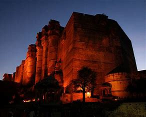

Jaipur
Culture
Jaipur has many cultural sites like Jawahar Kala Kendra formed by Architect Charles Correa and Ravindra Manch. Government Central Museum hosts several arts and antiquities. There is a government museum at Hawa Mahal and an art gallery at Viratnagar. There are statues depicting Rajasthani culture around the city.[78][79] Jaipur has many traditional shops selling antiques and handicrafts, as well as contemporary brands reviving traditional techniques, such as Anokhi. The prior rulers of Jaipur patronised a number of arts and crafts. They invited skilled artisans, artists and craftsmen from India and abroad who settled in the city. Some of the crafts include bandhani, block printing, stone carving and sculpture, tarkashi, zari, gota-patti, kinari and zardozi, silver jewellery, gems, kundan, meenakari and jewellery, Lakh ki Chudiya, miniature paintings, blue pottery, ivory carving, shellac work and leather ware.[80][75]
Jaipur has its own performing arts. The Jaipur Gharana for Kathak is one of the three gharanas of the major north Indian classical dance form of Kathak.[81] The Jaipur Gharana of Kathak is known for its rapid intricate dance forms, vivacious body movements and subtle Abhinaya.[81] The Ghoomar is a popular folk dance style.[82][83][84] Tamasha is an art form where Kathputli puppet dance is shown in play form.[39] Major festivals celebrated in Jaipur include Elephant Festival, Gangaur, Makar Sankranti, Holi, Diwali, Vijayadashami, Teej, Eid, Mahavir Jayanti and Christmas. Jaipur is also famous for the Jaipur Literature Festival, the world's largest free literature festival in which authors, writers and literature lovers from all over the country participate.[85]
Cuisine
Typical dishes include Dal Baati Churma, Missi Roti, Gatte ki Sabzi, Lahsun ki chutney, Ker Sangri, Makke ki Ghat, Bajre ki Ghat, Bajre ki Roti and Laal Maans.Jaipur is also known for its sweets which include Ghevar, Feeni, Mawa Kachori, Gajak, Meethi thuli, Chauguni ke laddu, and Moong Thal.
Click here for image of cuisine
Jaipur places
- Hawa Mahal
- Jal Mahal
- City Palace
- Albert Hall
- Jantar Mantar
Fort
- Nahargarh fort
- JaiGarh Fort
- Amer Fort

Temple
- Birla Mandir
- Moti Dungri Ganesh temple
- Akshardham
- Khole k Hanuman ji
- Galta Ji
- Govind dev ji temple
Mall
- Big Bazar
- Crystal palm
- palika Bazar
Park
- Naharu Garden
- City Park
- jaldhara